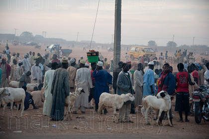
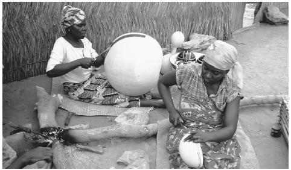
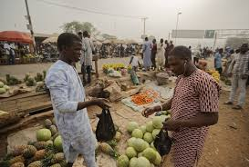

As we know, Nigeria is our main focus. Northern regions is one of the poorest areas in Nigeria. Places like; bauchi, kano, bornu, kaduna etc The rate of unemployment is very high,Nigeria’s unemployment rate stood at 23.1 percent of the workforce in the third quarter. This affects the citizens of Nigeria a lot. Citizens are suffering from lack of food, poor education and so on. This is one of our concerns in Nigeria. Main cause of poverty in Nigeria is CORRUPTION.
Government officials are doing things for their own gain instead of the citizens. You see citizens of Nigeria being homeless. You see many of them suffering from illiteracy and some of them who went to school but couldn’t find a job. This leads to many citizens doing odd jobs. Let’s take a look at one of the state for instance, KADUNA which is part of a northern state in Nigeria is mostly suffering from poor education which make most of them travel to the western part of Nigeria.
Western part of Nigeria which is also called the YORUBA LAND. The problem that occurs mostly there is Unemployment. You see graduate looking for job but later end up doing mostly transportation job e.g use of tricycles to transport people from one place to another which their profit is very low to feed their families.
Eastern part of Nigeria is also suffering from the same problem as the western part of Nigeria(unemployment).
Ethnic conflict can also be a major cause of poverty in Nigeria. Different ethnic groups fighting amongst each other either for space or land and so on. Political instability is also a problem in Nigeria whereby political government is not stable.